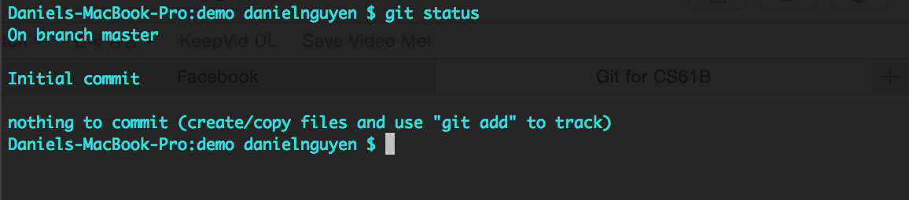
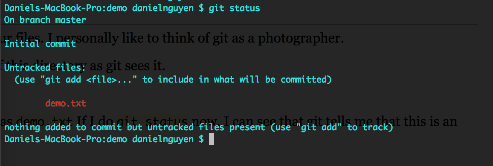
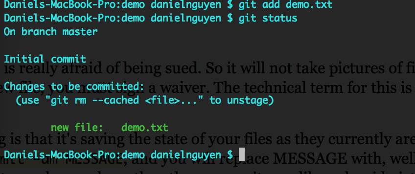
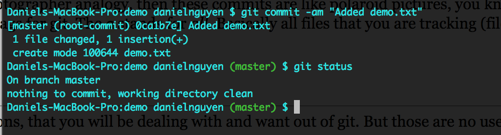
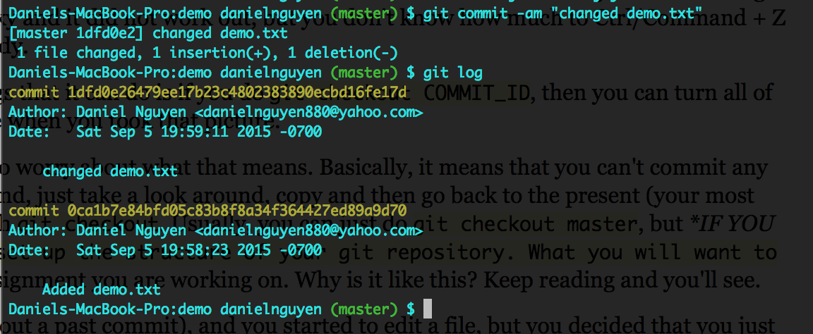
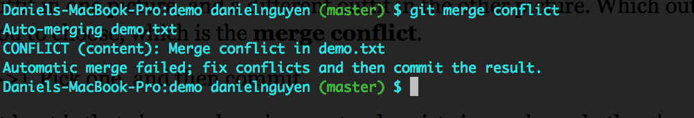
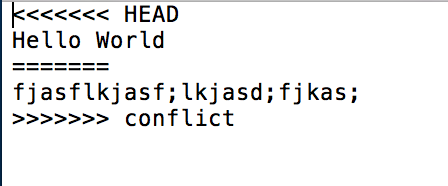

Git for CS61BA disclaimer before you read this. This note is for the purpose of git as used in CS61B and how I personally use git. I will graze over some of the finer details of git at the beginning. If you understand the basic of git and want a much more detailed guide, I point you to Sarah Kim's Git Guide. Table of ContentsGit BasicsGit is a version control system. It does what that sounds like it does, it keeps different versions of your files. I personally like to think of git as a photographer. So let's say I had an empty directory like below. When I do git status, I can see the current state of this directory as git sees it.  So right now, I haven't done anything yet and the status reflects that. Now let's say I add a file, such as demo.txt If I do git status now, I can see that git tells me that this is an untracked file.  So let's return to my metaphor that git is a photographer. More specifically, it is a photographer that is really afraid of being sued. So it will not take pictures of files that have not signed a waiver. So this signing of a waiver is done through git add. Every single time you have a new file, you must sign a waiver. The technical term for this is tracking, which is what you see when you do git status yet again.  Now that I added a file, I can now commit. Think of committing as taking a picture. What git is doing is that it's saving the state of your files as they currently are. But remember, only files that you have added (signed the waiver) before. The command that you will use is git commit -am MESSAGE, and you will replace MESSAGE with, well an informative message about what's different between this commit and previous commits. If we go back to my photographer analogy, then these commits are like polaroid pictures, you know the cute ones that have the little sharpie message at the bottom describing it. Same thing. The -am are flags for git. The a stands for all. Basically all files that you are tracking (files you have addedsigned the waiver.) The m stands for message.  A Bit More ConvolutedThe main thing you ever do with git is committing. After all, those are the snapshots/pictures/versions, that you will be dealing with and want out of git. But those are no use if you cannot actually utilize them. So first off, you probably want to be able to see all of your pictures. To do that, you should do git log. It's the log of all the commits that you have made. Here you can see each commit, its message, and its unique id (the string of letters and numbers after commit). Now is when we can start doing a few fancier things.  If we go back to the demo, currently there's only one commit. Let's say that I changed demo.txt, and then commited it. Now there are two commits. Now let's say that I want to go back in time. You'll probably do this often when you have projects. You decided to do something risky and it did not work out, but you don't know how much to Ctrl/Command + Z (or maybe you changed so much that you can't even undo enough). That's when git can come in handy. There is a command called git checkout. Now checkout can do a lot of things. But one of the things that it can do is if you do git checkout COMMIT_ID, then you can turn all of your files to the state it was at that commit. That is, you went back in time, and everything looks like when you took that picture. Now when this happens, you'll get this message that you're in detached head state. You don't need to worry about what that means. Basically, it means that you can't commit any more. You're in this parallel universe where you're an observer. Basically, when you use this command, just take a look around, copy and then go back to the present (your most recent commit) and then paste it. How do you get back to your most recent commit? Well, again with git checkout. Usually, you can just do git checkout master, but IF YOU ARE IN CS61B FA15, this will probably not be what you want to do because of how we set up the structure of your git repository. What you will want to do it git checkout ASSIGNMENT, and you'll replace assignment with the name of the current assignment you are working on. Why is it like this? Keep reading and you'll see. Another thing that git checkout can do is that if you are not back in time (i.e. you didn't just checkout a past commit), and you started to edit a file, but you decided that you just want to go back to the state of the last commit, but only for that specific file, then you can do git checkout FILE_NAME, and it will revert just that file to the state it was of the last commit. The Push and PullSo everything I've talked about so far is being done on your local computer. But there are times when you need to communicate with other computers about the state of your files. In the case of CS61B, you'll be doing that when you submit your assignments. In real life when you work in industry, this will be how you share your code amongst your team and collaborate. This is where the commands git fetch and git push come in. Git will usually be set up so that way there is a direct line of communication between a remote (a computer that's, well remote), and your local computer. What git fetch does is that it will essentially download all of the commits (pictures) from the remote computer onto your local. Now, you won't be able to see all the files yet, but know that they are there. git push does the opposite. It sends commits from your computer to the remote computers. Why do you need to do this? Well, you're committing (and hopefully reasonably often), but all of these commits are just on your computer. Likewise, we'll be committing too on our end. So in order for you to stay updated with what we got (for CS61B, that's when you need to get an assignment we released), or for us to stay updated with you (when you submit your assignment), you need to do these commands. Aside for CS61B-Fa15: What you are familiar with is git fetch shared. What exactly is shared? It's the name of the folder on our computer that has all of your starter files. So when you fetch from it, you're downloading folders from that folder that we have. Tag You're ItSo this gets its own section because tagging really isn't that complicated of a concept, but it's not exactly a basic thing. What tagging is, is well it's marking a commit, saying that it's special and giving it a special name. This is different from the message that you give each commit because a tag is really bright and bold. You can easily look things up by tags. (When we grade your assignments, we look them up through tags). So how do you tag? Well you do git tag TAG_NAME. In CS61B, you'll be doing git tag ASSIGNMENT-VERSION_NO. This will tag the most recent commit. If you want to tag a different commit than the most recent one (say you changed your mind and you decided that a previous version is better and will get you a higher grade), then do git tag TAG_NAME COMMIT_ID, and recall that you can get the commit id through git log. Now, tags are also special because in order for us to see the tags, you need to explicitly send them to us with git push –tags. Branching Into Advanced StuffI think this is probably the most confusing part of git, so if you're still reading, please bare with me and hopefully it makes sense. So what exactly are branches and branching. Well basically they're alternate realities. When you're at a commit, you can branch off into different realities. They all start from one commit, but then they branch off. Perhaps another way of thinking it is that why you branch off, it's like calling another photographer, and having him take a different set of pictures, unbeknownst to the current photographer. So there are two stacks of pictures that exist in parallel. Why would you want to do this? Well in industry, when you're working on a project and you want to make a new feature, you don't want to work on the existing code that is being release to the public. What if your new feature breaks something? So instead, branch into an alternate reality, and make the changes there, and then you can bring both realities together when you want to release the feature. So how do you branch? Well, there are several ways you can do it. You can do git branch BRANCH_NAME. And that will make the branch. However, you stay on your current reality(branch). Back to the photographer analogy, you hired the second photographer, but you didn't call him yet to tell him to take pictures. How do you switch to the other branch? Yet again with the command git checkout. This time however, you'll do git checkout BRANCH_NAME. This switched you to the alternate reality (the second photographer is now here). Now when you commit, you'll be committing in this alternate reality (adding to this separate stack of pictures). What if you want to do both steps, making a branch and switching to it, at the same time? Then you can do git checkout -b BRANCH_NAME. Hopefully that sounds familiar for those taking CS61B. So remember that these are alternate realities, different stacks of pictures. So what happens in one reality might not exist in the other. And your actual files will reflect that. Files that git cares about (files that have been added before/signed the waiver), can seemingly disappear when you switch between branches. DON'T FREAK OUT! THEY'RE STILL THERE! Once you switch between branches again THEY WILL COME BACK. Also note that before you can switch branches, you must commit. Git wants to make sure that any work that you are currently doing does not get lost, so it forces you to commit. For CS61B-Fa-15. Branching is actually what's happening when you are doing your assignments. Each assignment is its own branch (its own alternate reality). We set it up that way. So when you work on an assignment, you can only see that assignment because it only exists in the branch we set it up in. That's why when you want to work on a different assignment, you must do git checkout ASSIGNMENT, because you need to switch to that branch. That's also what shared actually is. It's not a folder, it's a branch on our end. Merging Realities TogetherSo I mentioned before that you can combine realities together. I think this makes a bit more sense if we go back to the photograph analogy. You had two stacks of photographs. You are then going to look at the most recent one in those stacks, and then photoshop them together, so you have a composite photo that represents everything that is either picture. You do this with git merge BRANCH_NAME. This will combine those two pictures together. Now there is a caveat. When you do this, if it so happens that a file exists in both branches, and at the end they are different, you get a merge conflit. You can also think of it like this, as you are photoshopping the pictures together, you see a person. That person is wearing one outfit in one picture, and a different outfit in the other picture. Which outfit should that person be wearing in the final picture? Git will not choose for you. Instead, it will force you to choose, which is the merge conflict.   How do you resolve these? Well, you pick. Git presents you the two options (they're between the <<<<<<</>>>>). Pick one, and then commit. HEAD stands for the branch you are currently on. The ===== splits between the two versions. The only name after the >>>>> refers to the branch that you tried to merge For CS61B-Fa15. You probably will not see these due to the fact that how we set up our branches at least is that since each assignment only exists in one branch, there's no way they can ever conflict. Also for CS61B-Fa15 If you're really that uncomfortable with the idea of not seeing your files at all times (but you shouldn't), then there is a way to always see them, and that's through always merging the different assignment branches into one master branch. You can do this by doing the following commands git checkout -b master Empty git push -u origin master Do the above ONLY ONCE. Then when you want do get another assignment, instead of doing git fetch shared, git checkout -b ASSIGNMENT shared/ASSIGNMENT, you will do git merge -m “start ASSIGNMENT” shared/ASSIGNMENT The choice is up to you. TLDRThis is really for the sake of CS61B, but I really do hope that you did read all of this. I don't think it's too much personally, but I might be wrong >< Before each assignment, you will do git fetch shared to get the files from our computers to yours (though you can't access them yet). git checkout -b ASSIGNMENT shared/ASSIGNMENT to actually see the assignment git push -u origin in order to set a link between the assignment on your computer and our computer so that way you submit to the right place As you're doing the assignment, you will git add FILE any NEW FILES that you make and need to keep track of (files that git needs to take a picture of, this is the signing of the waiver) git commit -am MESSAGE in order to commit (take a picture) af ALL of the files that you have added (files that are currently track/files that have signed the waiter), and give that commit a message that should be informative After you've finished, you need to do a final commit and then git tag ASSIGNMENT-VERSION_NO, in order to mark the last commit you made as special, and so we can know to grade it git push in order to send it to our computers git push –tags to send over the tags To switch between assignments, since we set it up so that you can only see the files for one assignment at a time, do git checkout ASSIGNMENT, after first committing, or else git will not let you (this is to save your work and make sure it doesn't disappear) Alternatively if you are that paranoid about not seeing files all at a time, do this ONCE git checkout -b master Empty git push -u origin master Then before each assignment, do git merge -m “start ASSIGNMENT” shared/ASSIGNMENT You will still commit as you are doing the assignment and submit the same way. Also remember to do git status often, to see what git is actually looking at. |